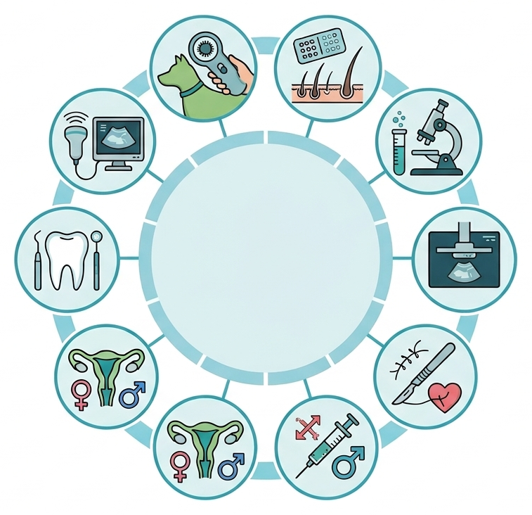

biotech
Labor
Präzise Analysen von Blut, Urin und Kot direkt in unserem hauseigenen Labor für schnelle Diagnosen.
Wir verbinden modernste Medizintechnik mit einer einfühlsamen Behandlung. Von der Vorsorge bis zur spezialisierten Chirurgie – Ihr Tier ist bei uns in besten Händen.

Höchste Standards in Hygiene und Diagnostik für Ihre Lieblinge.
Präzise Analysen von Blut, Urin und Kot direkt in unserem hauseigenen Labor für schnelle Diagnosen.
Viele Werte lassen sich direkt vor Ort auswerten. So gewinnen wir schnell Klarheit und können Behandlungen ohne unnötige Wartezeit besser einordnen.
Spezialisierte Untersuchung und Behandlung von Hauterkrankungen für ein beschwerdefreies Leben.
Bei Juckreiz, Hautentzündungen oder wiederkehrenden Problemen schauen wir gezielt nach Auslösern und besprechen verständlich, welche Schritte sinnvoll sind.
Schonende bildgebende Diagnostik des Bauchraums und des Herzens mit modernster Gerätetechnik.
Ultraschall hilft uns, Organe, Flüssigkeiten oder Trächtigkeiten ohne Belastung sichtbar zu machen – präzise, ruhig und oft direkt im Termin.
Digitales Röntgen für minimale Strahlenbelastung und sofort verfügbare, hochauflösende Aufnahmen.
Gerade bei Lahmheit, Verletzungen oder Atemwegsproblemen liefert digitales Röntgen schnell wichtige Hinweise und erleichtert die weitere Planung.
Kennzeichnung mittels Microchip und Ausstellung des EU-Heimtierausweises für sicheres Reisen.
Chip und Heimtierausweis schaffen Sicherheit im Alltag und auf Reisen. Wir beraten Sie, was sinnvoll ist und was direkt mit erledigt werden kann.
Intensivmedizinische Betreuung und Überwachung Ihrer Tiere nach Operationen oder bei schweren Krisen.
Wenn engmaschige Kontrolle nötig ist, bleibt Ihr Tier bei uns in guten Händen. So können wir schneller reagieren und den Verlauf sicher begleiten.
Prophylaxe, Zahnsteinentfernung und Extraktionen unter sicherer Inhalationsnarkose.
Zahnprobleme werden oft spät erkannt. Wir prüfen gründlich, erklären die nächsten Schritte verständlich und sorgen für eine schonende Versorgung.
Umfassende Betreuung bei Zuchtfragen, Deckzeitpunktbestimmung und Trächtigkeit.
Von Zyklusbeobachtung bis Trächtigkeitskontrolle begleiten wir Sie strukturiert und mit viel Erfahrung – individuell passend zu Tier und Situation.
Routineeingriffe sowie komplexe Operationen in unserem sterilen OP-Bereich.
Vor jedem Eingriff nehmen wir uns Zeit für Aufklärung, Planung und Nachsorge. So wissen Sie genau, was ansteht und was danach wichtig ist.
Eine reversible Alternative zur chirurgischen Kastration mittels Hormonimplantat.
Diese Option kann helfen, Verhalten oder hormonelle Themen zunächst zeitlich begrenzt einzuschätzen, bevor über einen dauerhaften Eingriff entschieden wird.
Jedes Tier ist individuell. Wir beraten Sie gerne persönlich zu Vorsorgeuntersuchungen, speziellen Behandlungsplänen oder Fütterungsfragen. Nutzen Sie unser Kontaktformular für Ihre Anfrage.